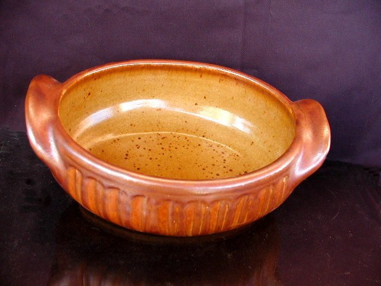

Gerald Morton
Gerald Morton has been working with pottery for well over 30 years. In 1977 Gerald moved into rural Saskatchewan about 7km north of Kenosee, where he founded Moose Mountain Pottery. Gerald mines his own minerals for use in his works of art. The minerals are mined in the Pipestone Valley, a region of historic intrest to both the Canadians and the French in South Eastern Saskatchewan. This makes his pottery not only spiritually significant but also naturally connected to Saskatchewan. Morton thinks that "These clay's and rocks have their own unique character and that fact makes self-concious self-expression inappropiate and unnecessary." Morton says that his works of art "...are a completely local expression and that commitment to locality, in my opinion, is a necessary precondition of work that is worth doing". This makes Gerald Morton a true Saskatchewan Artist.
Gallery

Granite Glaze




Snake America Platter

Created by: Garion Carlson July 2008